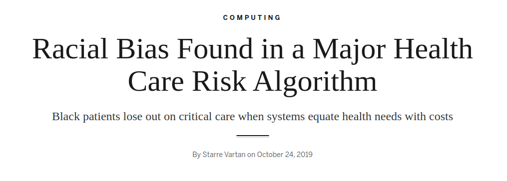

<section class="title-slide-lol"> ## Introduction to AI Ethics Liviu Vladutu ---- Nagarro Webinar <!-- .element: class="smaller grey italic" --> May 21, 2024 <!-- .element: class="smaller grey italic" --> Note: Interaction and questions </section> --- ## Who I am <div class="two-c-container" data-markdown> <div class="two-c-col-l"> </div> <div class="two-c-col-r" data-markdown> - Data Scientist @ [Nagarro](https://www.nagarro.com) - Deep Learning & Computer Vision (https://www.linkedin.com/showcase/ai-at-nagarro/) - Nagarro LSBU (https://www.linkedin.com/showcase/life-sciences-at-nagarro/) - Past research: Ph.D. and postdoc (https://sites.google.com/site/liviuvladutu/) - Main research interests: LLMs/NLP, GenAI, CV and Ethics </div> </div> --- <section data-background-iframe="https://https://www.nagarro.com/en" data-background-interactive> </section> --- ### Nagarro - Research division of Nagarro on LifeSciences - 19.5k+ people working in 36 countries <!-- .element: class="fragment" data-fragment-index="1" --> - spread worldwide (Europe, US, Asia, ...) <!-- .element: class="fragment" data-fragment-index="2" --> - On LifeSciences our competitors are Accenture, etc <!-- .element: class="fragment" data-fragment-index="3" --> --- ### Nagarro - LSBU - 1998 1,000 miles (2,000+ km) on Italian highways with autonomous steering <!-- .element: class="fragment" data-fragment-index="1" --> - 2005-2007 DARPA grand urban challenge, 100% autonomous <!-- .element: class="fragment" data-fragment-index="2" --> - 2010 VIAC: 15k+ km autonomous driving (Parma-Beijing) <!-- .element: class="fragment" data-fragment-index="3" --> - 2013 PROUD: 13km in Parma fully autonomous (L4) <!-- .element: class="fragment" data-fragment-index="4" --> - 2015: Acquisition by Ambarella <!-- .element: class="fragment" data-fragment-index="5" --> - 2020: Full autonomous driving demo @ CES 2020 Las Vegas <!-- .element: class="fragment" data-fragment-index="6" --> - 2022-onwards: autonomous driving L4 in all environment with a single low power chip (no GPU, no high end CPU) <!-- .element: class="fragment" data-fragment-index="7" --> --- <section> <iframe width="1120" height="630" src="https://www.nagarro.com/en" VQ=hd1080 frameborder="0" allow="accelerometer; autoplay; encrypted-media; gyroscope; picture-in-picture" allowfullscreen></iframe> </section> --- ### Ambarella - Vislab - What we do - State-of-the-art research on autonomous driving <!-- .element: class="fragment" data-fragment-index="1" --> - Only company in Italy (and one of the very few in Europe) to be allowed to test and drive in any road, at any time, with any traffic condition <!-- .element: class="fragment" data-fragment-index="2" --> - Both DL-based and classical approach to vehicle control, sensing, vision <!-- .element: class="fragment" data-fragment-index="3" --> - Sensing only based on cameras (1 stereo, 5 mono) + radars <!-- .element: class="fragment" data-fragment-index="4" --> --- ### Ambarella - Vislab - What we offer - A unique international research environment in Italy <!-- .element: class="fragment" data-fragment-index="1" --> - Ideas → development → deployment in T=0 <!-- .element: class="fragment" data-fragment-index="2" --> - Both industrial & academic research <!-- .element: class="fragment" data-fragment-index="3" --> - (Very) competitive salary & lot of benefits <!-- .element: class="fragment" data-fragment-index="4" --> - What we want <!-- .element: class="fragment" data-fragment-index="5" --> - You! <!-- .element: class="fragment" data-fragment-index="6" --> - Opening for thesis, PhD, jobs! <!-- .element: class="fragment" data-fragment-index="7" --> - If interested contact me or <!-- .element: class="fragment" data-fragment-index="8" --> - [careers-it@ambarella.com](mailto:careers@ambarella.com) <!-- .element: class="fragment" data-fragment-index="8" --> - [enascimbeni@ambarella.com](mailto:enascimbeni@ambarella.com) <!-- .element: class="fragment" data-fragment-index="8" --> --- _Our mission is to learn, pose questions and take initiative on how AI technology can be used for the social good._ --- <!-- .slide: data-auto-animate --> ## What are we doing? The promises offered by AI/ML technologies can raise important <ins>ethical & policy concerns among the population</ins>, which trigger the need for a set of <ins>values</ins> to be identified by policy-makers to be ensured through a set of <ins>tools and actions by AI/ML practitioners</ins>. --- <!-- .slide: data-auto-animate --> ## Wath are we doing? The promises offered by <span style="color: #44AFF6;">AI/ML technologies can raise important <ins>ethical & policy concerns among the population</ins></span>, which trigger the need for a set of <ins>values</ins> to be identified by policy-makers to be ensured through a set of <ins>tools and actions by AI/ML practitioners.</ins> <br> <p style="color:#44AFF6">Education</p> Note: Education is the most important thing for shaping AI around the need of people and not companies A repository of different educational resources (e.g., books, articles, videos); Blog posts Seminars, Lessons, Hackathon Podcast --- <!-- .slide: data-auto-animate --> ## Wath are we doing? The promises offered by AI/ML technologies can raise important <ins>ethical & policy concerns among the population</ins>, which trigger the <span style="color: #44AFF6;">need for a set of <ins>values</ins> to be identified</span> by policy-makers to be ensured through a set of <ins>tools and actions by AI/ML practitioners.</ins> <br> <p style="color:#44AFF6">Values</p> Note: We want to shapa AI around people, what values the development of AI should have Principle for ethical AI eg Accuracy and robustness, Privacy, Accountability For every principle we provide a brief description and a real-world example. --- <!-- .slide: data-auto-animate --> ## Wath are we doing? The promises offered by AI/ML technologies can raise important <ins>ethical & policy concerns among the population</ins>, which trigger the need for a set of <ins>values</ins> to be identified by policy-makers to be ensured through a <span style="color: #44AFF6;">set of <ins>tools and actions by AI/ML practitioners.</ins></span> <br> <p style="color:#44AFF6">Actions</p> Note: For each principle we have a set of tools to be used to porsue that principle Conference Projects (liguria, repository of high risk AI application) --- ## Interested? Join us! - We are an open organization, we always welcome new interested people! - We have periodic meetings open to everyone (∼ once a month) - Best way to join us: join our [Slack channel!](https://join.slack.com/t/aiforpeople/shared_invite/zt-9v5d5b9w-hVmwbBuJua~0vaHEbVIzfA) - Send an email to us (check the website) - Reach us on social networks (we are on Twitter, Linkedin, Instagram, Facebook). - If you are interested in our initiatives, sign to [our monthly newsletter!](https://mailchi.mp/5dd357b5efef/ai-for-people) - <ins>We have openings for thesis/internships in collaboration with Unibo!</ins> - Contact [research@aiforpeople.org](mailto:research@aiforpeople.org) --- <!-- .slide: data-auto-animate --> ## Why AI ethics? --- <!-- .slide: data-auto-animate --> ## Why AI ethics? <img src="https://github.com/manuelperuzzi/evolutionary-cars/blob/master/examples/evo-cars_track03.gif?raw=true" height="500"> [https://github.com/ggraffieti/evolutionary-cars](https://github.com/ggraffieti/evolutionary-cars) <!-- .element: class="smaller" --> Note: Back in 2017 nobody talked about ethics in AI like when in the early 1900s nobody talked about ethics of quantuum mechanics When ethics became important? When technology can greatly and badly influence the life of the whole humanking. Like the atomic bomb Now we are there with AI --- ## Why AI ethics? <!-- .element: class="fragment fade-out long-transition" data-fragment-index="1" --> <div class="r-stack"> <a href="https://colab.research.google.com/drive/1fPoKGW23BVa117hHAQtzCRBgysmmzoWj?usp=sharing" target="_blank">Demo!</a> <img class="fragment fade-out long-transition" data-fragment-index="1" src="./img/oppenheimer.png" height="500"> </div> --- ## But that was just an example right?  <!-- .element: class="fragment" data-fragment-index="1" --> <p class="fragment" data-fragment-index="1">Hint: <span class="fragment custom blur">think about how US healthcare works.</span></p> --- ## But that was just an example right? <img src="./img/amazon_women.png" height="300"> <p>Hint: <span class="fragment custom blur">think about gender representation inside tech jobs.</span></p> --- ## Well, we can try to fix this right? ### How? <!-- .element: class="fragment" data-fragment-index="1" --> --- ### First of all we need to detect the problem - How we tested the model? <!-- .element: class="fragment" data-fragment-index="1" --> - Did train/validation/test sets were collected from the same distribution of data? <!-- .element: class="fragment" data-fragment-index="2" --> - What metrics we used to evaluate the performance? <!-- .element: class="fragment" data-fragment-index="3" --> - What we mean by performance? <!-- .element: class="fragment" data-fragment-index="4" --> --- ### But if we remove all gender, ethnicity, or unwanted information from the data? - The AI system can infer them from remaining information <!-- .element: class="fragment" data-fragment-index="1" --> - Gender from height/weight ratio <!-- .element: class="fragment" data-fragment-index="2" --> - Ethnicity from specific disorders <!-- .element: class="fragment" data-fragment-index="3" --> - Level of weath from geographical information <!-- .element: class="fragment" data-fragment-index="4" --> - ... <!-- .element: class="fragment" data-fragment-index="5" --> Note: Beware of correlation between data and over representation! A dataset for type 2 diabetes is maily composed of overweight people Models are LAZY --- ### But models are really that powerful? #### Spoiler: yes <!-- .element: class="fragment" data-fragment-index="1" --> --- ### Let's make a test Question time: What is a randon number? Ok, now tell me a random integer between 1 and 10 <!-- .element: class="fragment" data-fragment-index="1" --> What the distribution of answers should look like? <!-- .element: class="fragment" data-fragment-index="2" --> --- <img src="./img/human_random.jpg" height="600px"> --- ### Now let's ask chatGPT <img class="fragment fade-in" data-fragment-index="1" src="./img/random_gpt_ans.png" height="150px"> <br/> <img class="fragment fade-in" data-fragment-index="2" src="./img/random_gpt_number.png" height="150px"> What if we ask chatGPT that many times? <!-- .element: class="fragment smaller" data-fragment-index="3" --> --- <div class="r-stack"> <img class="fragment fade-out" data-fragment-index="1" src="./img/random_gpt_paper.jpg" width="70%"> <div class="two-c-container"> <div class="two-c-col"> <img class="fragment fade-in" data-fragment-index="1" src="./img/random_gpt.jpeg"> </div> <div class="two-c-col"> <img class="fragment fade-in" data-fragment-index="2" src="./img/human_random.jpg"> </div> </div> </div> [Can LLMs Generate Random Numbers? Evaluating LLM Sampling in Controlled Domains](https://arxiv.org/abs/2403.00742) <!-- .element: class="fragment smaller fade-out" data-fragment-index="1" --> --- #### And even more covertly <img src="./img/dialect_gpt.png" height="300px"> [Dialect prejudice predicts AI decisions about people's character, employability, and criminality](https://arxiv.org/abs/2403.00742) <!-- .element: class="smaller" --> --- ### The rise of fundational models - All big AI companies are training huge, general models, that then can be fine tuned to downstream tasks - Apart from few big companies nobody have data and computing power to train them <!-- .element: class="fragment" data-fragment-index="1" --> - Rise of genAI with unbelivable performance and realism <!-- .element: class="fragment" data-fragment-index="2" --> - Enviromental-friendly <!-- .element: class="fragment" data-fragment-index="3" --> - A big leap in a plethora of different tasks <!-- .element: class="fragment" data-fragment-index="4" --> Note: How many of you used pretrained models? How many of you used or wanted to use chatGPT or similar models? --- <!-- .slide: data-auto-animate --> ### Do you trust who trains those models? - What data is used for the training is undisclosed <!-- .element: class="fragment" data-fragment-index="1" --> - The use of private data they should not have used is higly probable <!-- .element: class="fragment" data-fragment-index="2" --> - We don't know what kind of biases are hidden inside the models <!-- .element: class="fragment" data-fragment-index="3" --> - We don't know if during training some biases were inserted deliberately <!-- .element: class="fragment" data-fragment-index="4" --> - The models are so big and complex that trying to discover this information is often impossible <!-- .element: class="fragment" data-fragment-index="5" --> - Usually only the weights are shared, nor training procedure nor data is released <!-- .element: class="fragment" data-fragment-index="6" --> <br/> <br/> <br/> So, do you trust them? <!-- .element: class="fragment fade-in" data-fragment-index="7" --> --- <!-- .slide: data-auto-animate --> So, do you trust them? <!-- .element: class="bigger" --> --- ### Let's pause a bit, and think about humans now - Humans are not perfect decision making machines <!-- .element: class="fragment" data-fragment-index="1" --> <span>(maybe you already noticed that 😄)</span> <!-- .element: class="fragment" data-fragment-index="2" --> - Juror decision are affected by sport results <!-- .element: class="fragment" data-fragment-index="3" --> - [Emotional Judges and Unlucky Juveniles](https://www.nber.org/papers/w22611?utm_campaign=ntw&utm_medium=email&utm_source=ntw) <!-- .element: class="fragment smaller" data-fragment-index="3" --> - Self-driving cars may look scary, but: <!-- .element: class="fragment" data-fragment-index="4" --> - [1.19M people die every year by crashes, 1st cause of death for people under 30](https://www.who.int/news-room/fact-sheets/detail/road-traffic-injuries) <!-- .element: class="fragment smaller" data-fragment-index="4" --> - What about human-AI collaboration? <!-- .element: class="fragment" data-fragment-index="5" --> - What if AI is right 99.999% of the time? <!-- .element: class="fragment" data-fragment-index="6" --> - What if AI is so convincing that persuade the human to take the wrong decision? <!-- .element: class="fragment" data-fragment-index="7" --> Note: Example of the nerdy friends in high school who always get 10 Example of google painting, american lawyer, Adversarial examples --- <img src="./img/adv_ex3.png" height="400px"> [Impact of Adversarial Examples on Deep Learning Models for Biomedical Image Segmentation](https://link.springer.com/chapter/10.1007/978-3-030-32245-8_34) <!-- .element: class="smaller" --> --- <!-- .slide: data-transition="zoom" --> ## What we should do? # 😱 --- ### Unfortunately, we don't know - Technically you can: <!-- .element: class="fragment" data-fragment-index="1" --> - Use white box or explainable AI models <!-- .element: class="fragment" data-fragment-index="2" --> - Try to explain a posteriori the predictions of a model <!-- .element: class="fragment" data-fragment-index="3" --> - E.g. visualizing where the model concentrate to make its prediction (attention) <!-- .element: class="fragment" data-fragment-index="4" --> - Try to play with the prediction of the model in order to find strange behaviours <!-- .element: class="fragment" data-fragment-index="5" --> - E.g. Adversarial training <!-- .element: class="fragment" data-fragment-index="6" --> - <!-- .element: class="fragment" data-fragment-index="7" --> Beware that some behaviours may be <ins><em>really</em></ins> strange Note: May talk about horses in image recognition Number of cells in generative models !! Apart from the technical side, there is something much more importat in order to guide the development and the use of AI in the right direction. You --- <img src="./img/wewantyou.png" height="500px"> Note: As a developer, manager, or simply user you have the power to shape AI in the right way Do not stop at the initial enthusiasm, do not trust all the thing companies says to you Is it more importat to publish a paper or do a study that beats the sota of a 0. something, or deeply analizing if something in the metric used, the model, the data is not right? Think about the implication of using AI in a specific task, do not focus only on the results. I think you all deeply want to make the world a better place, this is the occasion for each one of you The best way to build a ship...the petit prince --- <!-- .slide: data-auto-animate --> ## To sum up - Always think about the possible (ethical) problems of your AI system <!-- .element: class="fragment" data-fragment-index="1" --> - Spend a lot of time to think about data, how it was acquired, how it was labeled, the level of generalization, ... <!-- .element: class="fragment" data-fragment-index="2" --> - Do not fall for easy and fast enthusiasm: the possible bad outcomes are often hidden and difficult to spot. <!-- .element: class="fragment" data-fragment-index="3" --> - Try to not become resistant, anti, or too critic to AI <!-- .element: class="fragment" data-fragment-index="4" --> - Be an advocate for ethical AI systems <!-- .element: class="fragment" data-fragment-index="5" --> - How AI take decisions is often totally different from how humans reason and think! <!-- .element: class="fragment" data-fragment-index="6" --> --- <!-- .slide: data-auto-animate data-background-color="red" --> - How AI take decisions is often totally different from how humans reason and think! <!-- .element: class="no-dot bigger" --> Note: AI only see what we give to it. Stop saying that AI is like a child, AI is not something of this world, he don't understand anything apart from optmizing the metric we give to it. --- <section> <img src="./img/thatsall_white.png" height="300px"> <p class="fragment" data-fragment-index="2">Questions?</p> </section> <section> <h2>Extra: Politics of AI</h2> <ul> <li class="fragment" data-fragment-index="1">AI big companies claim to be democratic</li> <ul> <li class="fragment" data-fragment-index="2">Sharing their research (e.g. arXiv).</li> <li class="fragment" data-fragment-index="3">Sharing their code (e.g. github).</li> <li class="fragment" data-fragment-index="4">Sharing their frameworks (e.g. Tensorflow).</li> <li class="fragment" data-fragment-index="5">Sharing their infrastructure (?) (e.g. colab).</li> </ul> </ul> <blockquote class="fragment" data-fragment-index="6" > [...] at an increasing scale, consumers have greater access to use and purchase technologically sophisticated products, as well as to <span style="color: #44AFF6;"><b>participate meaningfully in the development of these products.</b></span> </blockquote> </section> <section> <img src="./img/ceobiden.jpg" height="500px"> <p class="smaller">White House meeting on the threat of AI - May 5, 2023</p> </section> <section> <img src="./img/altman1.png" height="200px"> <p class="smaller">The Guardian - May 16, 2023</p> <img class="fragment" data-fragment-index="1" src="./img/altman2.png" height="200px"> <p class="fragment smaller" data-fragment-index="1">The Verge - May 25, 2023</p> </section> <section> <h3>Why AI democracy is important</h3> <ul> <li class="fragment" data-fragment-index="1">Avoid monopolies.</li> <li class="fragment" data-fragment-index="2">Openness in AI development is proved to be beneficial to the development of better technologies.</li> <li class="fragment" data-fragment-index="3">Democratization means that <span class="fragment highlight-blue" data-fragment-index="4">everyone gets the opportunities and benefits of artificial intelligence.</span></li> </ul> </section> --- <!-- .slide: class="title-slide-lol" --> ## Introduction to AI Ethics Gabriele Graffieti ---- You can find this slides at: <!-- .element: class="smaller grey italic" --> <br> [https://ggraffieti.github.io/slides_aiethics_bio_ieee](https://ggraffieti.github.io/slides_aiethics_bio_ieee/)